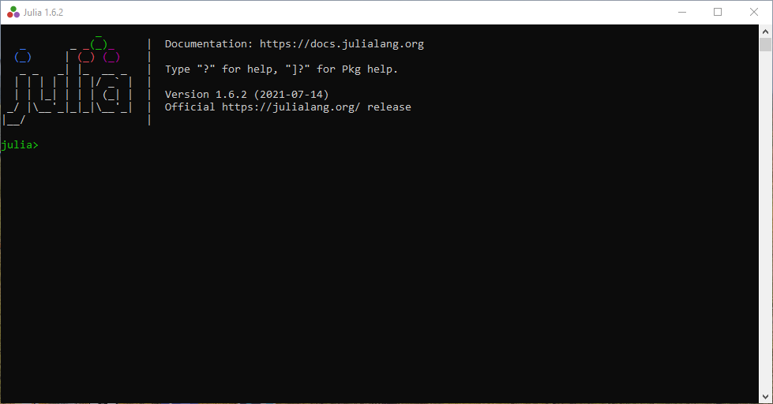

Inicio¶
Julia es un poderoso lenguaje de programación enfocado en la potencia y velocidad. Es de código abierto y de libre uso. Visite la página oficial de Julia para mayor información.
Al iniciar Julia se muestra una pantalla en que es la línea de comandos de Julia conocida como Julia REPL.

Esta permite la entrada y evalua los comandos al instante.
Una vez en la consola se pueden entrar a distintos modos, tal como el modo de ayuda escribiendo ? o el modo comando de sistema con ; o el modo paquetes escribiendo ]. Se puede salir de dichos modos con la tecla de borrar o con Ctrl+c.
Julia también puede ejecutarse en entornos gráficos, por ejemplo Jypiter Notebooks o VS Code.
Variables¶
Julia tiene varios tipos de variables, por ejemplo tipo numérico (entero y flotante) booleano o caracter. Para conocer todos los tipos de variables que existen, consulte la documentación.
Se puede definir una variable usando el operador de asignación = como se muestra en el siguiente ejemplo.
x = 1
y = 1.25
z = x + y
a = "abc"
si = true
Para saber de que tipo es, se puede usar la función typeof(), el resultado se muestra
typeof(x)
Int64
Vectores¶
La forma de definir vectores es mediante el uso de corchetes cuadrados [], por ejemplo:
a = [1,2,3]
b = [2,4,5]
No confundir con tuplas
La forma de definir una tupla es mediante un paréntesis ().
Al igual que otros lenguajes de programación, la forma de acceder a sus elementos es mediante el operador [] y también con : se puede definir una secuencia.
a[2]
b[1:2]
Operadores aritméticos¶
Julia soporta diversos operadores aritméticos, la siguiente tabla muestra los principales operadores.
| Expresión | Nombre | Descripción |
|---|---|---|
x + y |
suma | realiza adición |
x - y |
resta | realiza substracción |
x * y |
producto | realiza multiplicación |
x / y |
división | realiza división |
x ÷ y |
división entera | similar a x/y, pero truncado a un entero |
x \ y |
división inversa | equivalente a y/x |
x ^ y |
potencia | eleva x a la potencia y |
x % y |
resto | equivalente to rem(x,y) |
Para una mayor referencia visita la secciónoperadores aritméticos.
Control de flujo¶
Julia posee estructuras para control de flujo. Se puede realizar un ciclo usando el siguiente código
for x in 1:10
println(x)
end
Nota
La función print() imprimiría los valores consecutivamente sin espacio, mientras que println() los imprime en una línea nueva.
Se debe tomar en cuenta que la palabra for debe cerrarse con un end para delimitar el bloque.
Para usar el ciclo while, se usa el siguiente código
x = 0
while x <= 5
println(x)
x = x + 1
end
Ciclo infinito
No olvides aumentar el contador con el fin de que se cumpla la condición, de otro modo se entraría en un ciclo infinito.
Funciones¶
Para definir una función, se usa la palabra function seguido del nombre de la función y entre paréntesis los argumentos.
Se debe especificar la paabra clave return, de otro modo retornaría el último valor calculado.
La función termina con un end e inmediatamente se compila.
function signo(x)
if x < 0 resp = "Negativo"
elseif x > 0 resp = "Positivo"
else resp = "Es Cero"
end
return resp
end
una vez compilada, se puede usar.
signo(-5)
El resultado sería el siguiente
“Negativo”
Paquetes¶
Julia tiene un gestor de paquetes en el cual se pueden descargar miles de ellos.
Para acceder a ellos basta con entrar al modo paquete y escribir en la consola. Por ejemplo, para instalar el paquete DataFrames usaremos el siguiente comando
add DataFrames
alternativamente, desde la consola REPL podemos escribir
import Pkg
Pkg.add("DataFrames")
Para comenzar a usarlo, escribimos desde la consola
using DataFrames